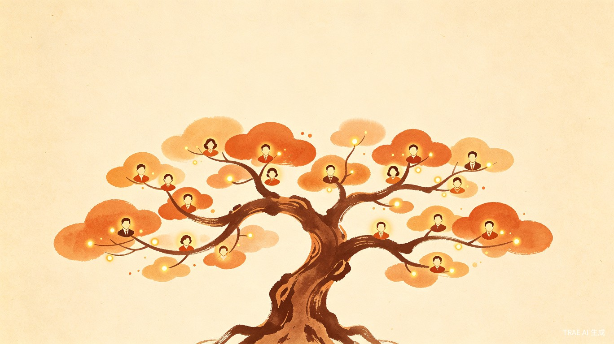

让每一片枝叶都被铭记
传统纸质族谱仅留下一个名字，家族记忆随岁月流失。电子族谱解决家族电子传承的难题，让后人不只看先辈的名字，更能看到他们鲜活的一生。
家中长辈去世后，翻看族谱时发现先人只留下寥寥数语。我希望未来后人可以更完整丰富地了解自己长辈的一生，也满足当代人"族谱单开一页"的愿望。
一个覆盖 App、小程序、网站、应用软件及定制硬件的多端平台，让家族成员随时随地以文字、图片、视频的形式记录个人及家庭点滴。
核心用户群体包括带孩子的夫妻和退休的老人——前者希望为下一代留下成长印记与家族脉络，后者希望在晚年梳理一生的故事、将智慧与记忆传递给后人。
带孩子时记录成长瞬间、老人忆往昔时口述生平、无聊无人陪伴时翻看家族故事、老人去世后后代追忆缅怀——贯穿家族成员生命周期的每一个重要时刻。
枝记通过多端覆盖的方式，确保不同年龄、不同使用习惯的家族成员都能轻松接入：
支持文字记录、图片上传、视频留存等多种媒介形式，让家族记忆以最生动的方式被保存与呈现。
商业收益未必很好，但这是很有价值的事情——我自己投入也会做，不需要外部投资。它可以更好地实现家族传承就是最大的意义，让后人珍惜当下，带着先辈的荣光努力奋进，也是我们中华民族绵延至今的根本。 —— 枝记 创始人
为中华民族"家文化"的数字化传承提供基础设施。每一个普通家族都能拥有自己的电子族谱，让家族记忆不再因时间而消散，为中华文明的绵延贡献最基础、最深远的支撑。
将分散在纸张、口述、各人手机中的家族记忆汇集到一个平台，一键查阅、永久保存、随时更新。老人录制口述历史，年轻人扫码查看，跨代沟通零门槛。
枝繁叶茂，生生不息。
让每一片枝叶，都被铭记。